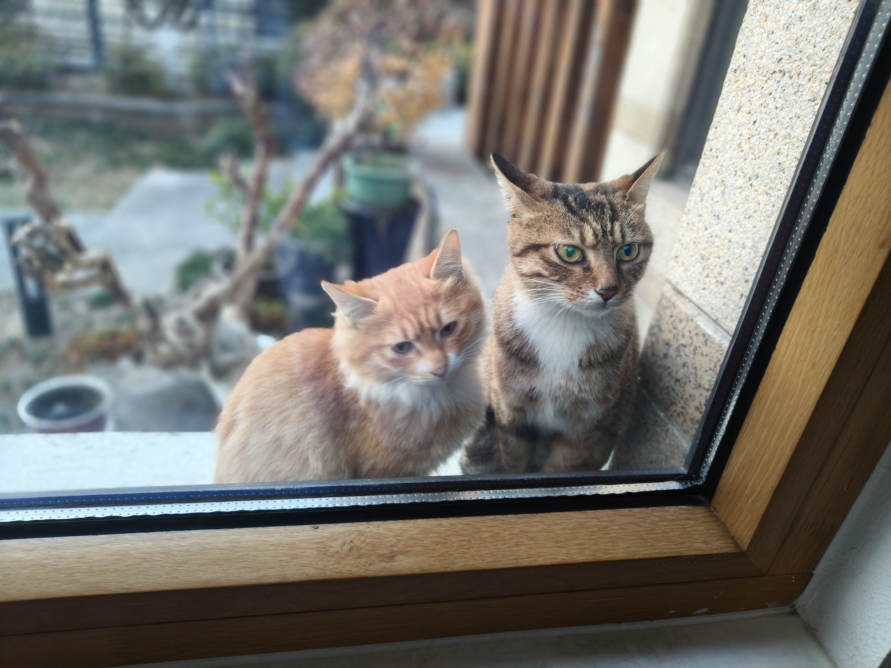

SKILLS
- Language Skills
- English (fluent)
- Chinese (native)
- TOEFL (112/120; super-score 115)
- Computer Skills
- Proficient in Word, Excel, and PowerPoint, Photoshop, Premiere, Python, p5.js, Xiumi, Capcut
INTERESTS
- Hosting
- Singing
- Activity Planning
More Than My Work: The Pet Lover in Me
When someone asks for a fun fact about me, I always say that I have six pets at home: five British Shorthair cats, one Ragdoll, and one Bichon! Spending time with them warms my heart whenever I feel lonely—though sometimes they can be so mischievous that they drive me a little crazy.
I also support stray cats in my neighborhood by giving them small warm shelters and food throughout the winter.
